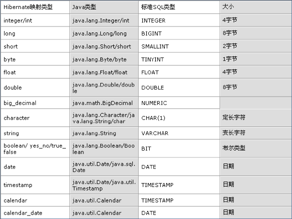
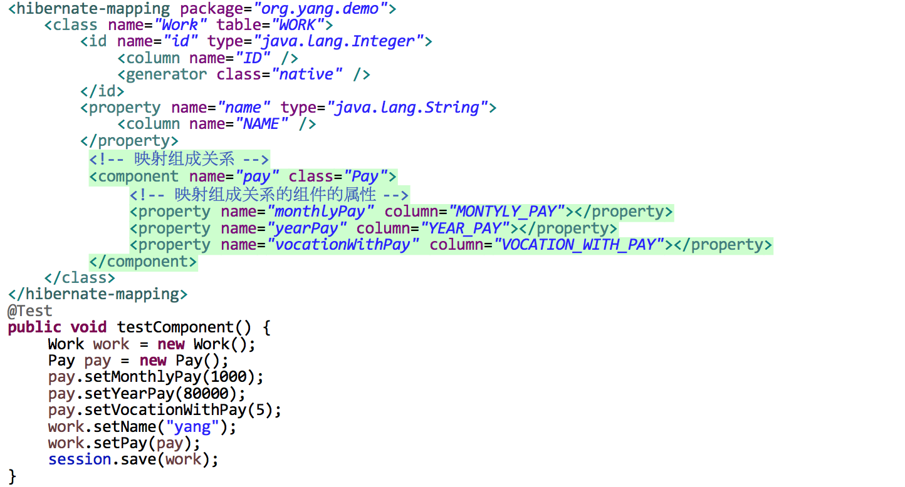
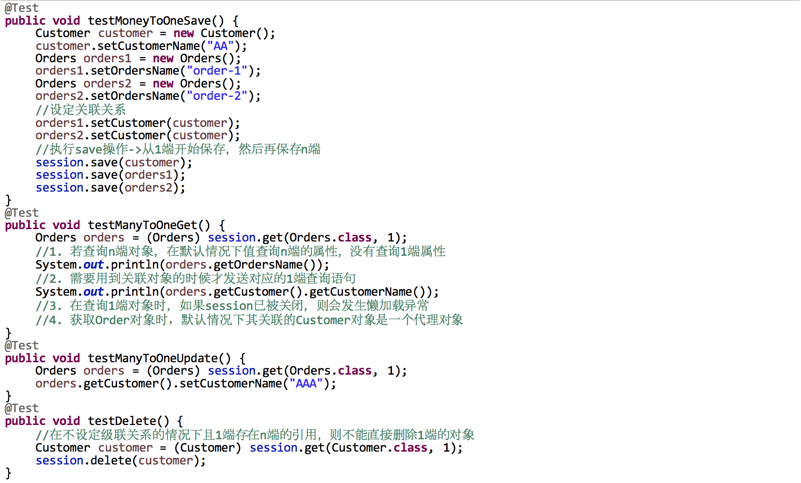
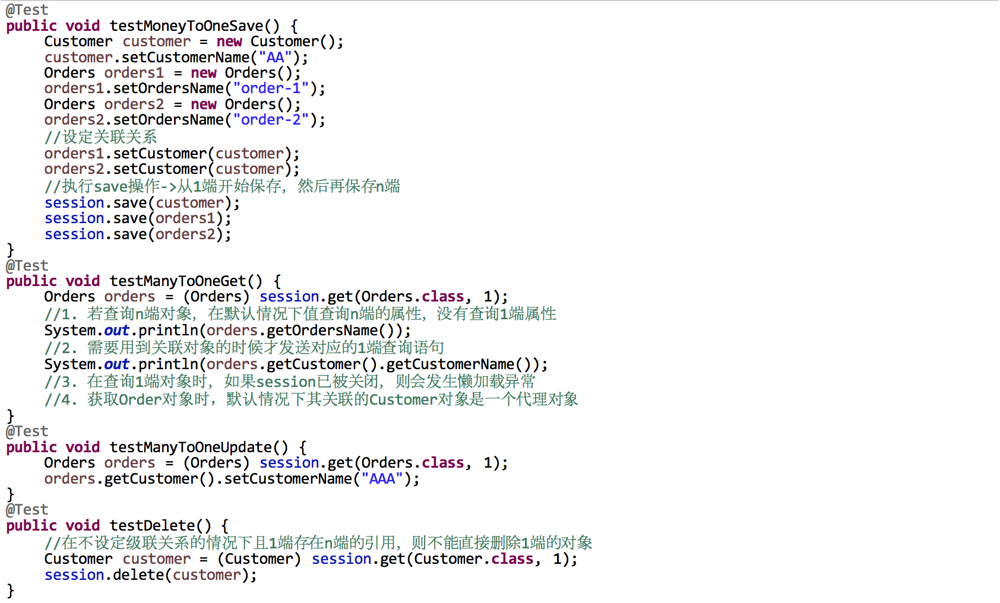
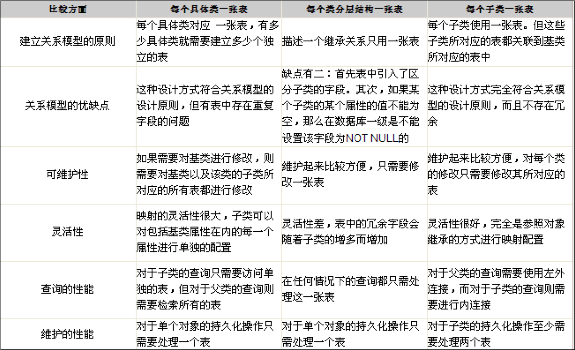

第一部分 基础知识
1.1 对象持久化与ORM
- 对象持久化
- 狭义的理解：持久化仅仅只把对象永久保存在数据库中
- 广义的理解：持久化包括和数据库相关的各种操作
- 保存 - 把对象永久保存到数据库中
- 更新 - 更新数据库中对象(记录)的状态
- 删除 - 从数据库中删除一个对象
- 查询 - 根据特定的查询条件，把符合查询条件的一个或多个对象从数据库加载到内存中
- 加载 - 根据特定的OID，把一个对象从数据库中加载到内存中
OID - 为了在系统中能够找到所需的对象，需要为每一个对象分配一个唯一的表示号，在关系数据库中称为主键，在对象术语中成为对象标示(Object identifier-OID)
- ORM
- ORM主要解决对象-关系映射
面向对象的概念 面向关系的概念 类 表 对象 表的行 属性 表的列 - ORM思想：将关系数据库中表的记录映射为对象，以对象的形式展现，可以将数据库的操作转化为对对象的操作
- ORM采用元数据来描述对象-关系映射细节，元数据通常采用XML格式，存放在专门的对象-关系映射文件中
- 关系图
- ORM主要解决对象-关系映射
1.2 Hibernate开发步骤
- 安装eclipse的hibernate插件
安装方法说明:- Help --> Install New Software...
- Click Add...
- In dialog Add Site dialog, click Archive...
- Navigate to hibernatetools-Update-4.1.1.Final_2013-12-08_01-06-33-B605.zip and click Open
- Clicking OK in the Add Site dialog will bring you back to the dialog 'Install'
- Select the Jboss Tools hibernatetools Nightly Build Update Site that has appeared
- Click Next and then Finish
- Approve the license
- Restart eclipse when that is asked
- 准备Hibernate环境
- 导入Hibernate必须的jar包 - hibernate-release-4.2.4.Final\lib\required\*.jar
- 加入数据库驱动的jar包
- Hibernate开发步骤与实例
- 创建Hibernate配置文件 : src/hibernate.cfg.xml
<?xml version="1.0" encoding="UTF-8"?> <!DOCTYPE hibernate-configuration PUBLIC "-//Hibernate/Hibernate Configuration DTD 3.0//EN" "http://hibernate.sourceforge.net/hibernate-configuration-3.0.dtd"> <hibernate-configuration> <session-factory> <!-- Hibernate 连接数据库基本信息 --> <property name="connection.username">root</property> <property name="connection.password">root</property> <property name="connection.driver_class">com.mysql.jdbc.Driver</property> <property name="connection.url">jdbc:mysql:///testh</property> <!-- Hibernate 基本配置 --> <property name="dialect">org.hibernate.dialect.MySQLDialect</property> <property name="show_sql">true</property> <property name="format_sql">true</property> <property name="hbm2ddl.auto">update</property> <!-- 设置Hibernate的事务隔离级别 --> <property name="connection.isolation">2</property> <!-- 删除对象后，使其OID置为null --> <property name="use_identifier_rollback">true</property> <!-- 配置C3P0数据源 --> <!-- 数据库连接池的最大连接数 --> <property name="hibernate.c3p0.max_size">10</property> <!-- 数据库连接池的最小连接数 --> <property name="hibernate.c3p0.min_size">5</property> <!-- 连接池检测线程多长时间检测一次池内的所有链接对象是否超时 --> <property name="hibernate.c3p0.idle_test_period">2000</property> <!-- 数据库连接池中连接对象在多长时间没有使用过后，就应该被销毁 --> <property name="hibernate.c3p0.timeout">2000</property> <!-- 缓存Statement对象的数量 --> <property name="hibernate.c3p0.max_statements">10</property> <!-- 设定JDBC的Statement读取数据的时候每次从数据库中去除的记录条数 --> <property name="hibernate.jdbc.fetch_size">100</property> <!-- 设定对数据库进行批量删除，批量更新，批量插入时批次大小 --> <property name="jdbc.batch_size">30</property> <mapping resource="org/yang/demo/News.hbm.xml"/> </session-factory> </hibernate-configuration> - 创建持久化类 : src/org/yang/demo/News.java
package org.yang.demo; import java.sql.Date; public class News { private Integer id; private String title; private String author; private Date date; public News() { } public News(String title, String author, Date date) { this.author = author; this.title = title; this.date = date; } public String getAuthor() { return author; } public Date getDate() { return date; } public Integer getId() { return id; } public String getTitle() { return title; } public void setAuthor(String author) { this.author = author; } public void setDate(Date date) { this.date = date; } public void setId(Integer id) { this.id = id; } public void setTitle(String title) { this.title = title; } @Override public String toString() { return "News [id=" + id + ", title=" + title + ", author=" + author + ", date=" + date + "]"; } } - 创建对象-关系映射文件 : src/org/yang/demo/News.hbm.xml
<?xml version="1.0"?> <!DOCTYPE hibernate-mapping PUBLIC "-//Hibernate/Hibernate Mapping DTD 3.0//EN" "http://hibernate.sourceforge.net/hibernate-mapping-3.0.dtd"> <hibernate-mapping> <class name="org.yang.demo.News" table="NEWS"> <id name="id" type="java.lang.Integer"> <column name="ID" /> <!-- 指定主键的生成方式，native:使用数据库本地的方式 --> <generator class="native" /> </id> <property name="title" type="java.lang.String"> <column name="TITLE" /> </property> <property name="author" type="java.lang.String"> <column name="AUTHOR" /> </property> <property name="date" type="java.sql.Date"> <column name="DATE" /> </property> </class> </hibernate-mapping> - 通过Hibernate API编写访问数据库代码
public class HibernateTest { @Test public void test() { //1. 创建SessionFactory对象 SessionFactory sessionFactory = null; //1-1 创建Configuration对象， 对应hibernate的基本配置信息和对象关系映射信息 Configuration configuration = new Configuration().configure(); //sessionFactory = configuration.buildSessionFactory();4.0前的方法已过期 //1-2 创建ServiceRegistry对象, hibernate任何配置和服务都需要在该对象中注册才能有效 ServiceRegistry serviceRegistry = new ServiceRegistryBuilder() .applySettings(configuration.getProperties()) .buildServiceRegistry(); sessionFactory = configuration.buildSessionFactory(serviceRegistry); //2. 创建一个Session对象 Session session = sessionFactory.openSession(); //3. 开启事务 Transaction transaction = session.beginTransaction(); //4. 执行保存操作 News news = new News("test1", "yang", new Date(new java.util.Date().getTime())); session.save(news); //5. 提交事务 transaction.commit(); //6. 关闭Session session.close(); //7. 关闭SessionFactory sessionFactory.close(); } }
- 创建Hibernate配置文件 : src/hibernate.cfg.xml
1.3 基本配置
- 创建持久化java类要求
- 提供一个无参的构造器：使Hibernate可以使用Constructor.newInstance()来获取持久化类实例
- 提供一个标识属性：通常映射为数据库表的主键字段，如果没有该属性会使一些功能无法使用，例如Session.saveOrUpdate()
- 为类的持久化字段声明修改器和访问器：Hibernate对javaBean风格的属性实行持久化
- 使用非final类：运行时生成代理是Hibernate的重要功能，如果持久化类没有实现任何接口，Hibernate使用CGLIB生成代理，如果使用final类则无法生成CGLIB代理
- 重写equals和hashCode方法：如果需要将持久类的实例放到Set(当需要进行关联映射时)，重写这两个方法
- Hibernate不要求持久化类继承任何父类和接口，以保证代码不被污染，因此称Hibernate为低侵入式设计
- Configuration
- Configuration类负责管理Hibernate配置信息，包括
- Hibernate运行的底层信息：数据库url，用户名，密码，JDBC驱动类，数据库Dialect，数据库连接池等(对应hibernate.cfg.xml)
- 持久化类与数据表的映射关系(对应*.hbm.xml)
- 创建Configuration的方式
- 属性文件(hibernate.properties)
Configuration cfg = new Configuration(); - xml文件(hibernate.cfg.xml)
Configuration cfg = new Configuration.configure(); - 指定xml配置文件
File file = new File("simpleit.xml");Configuration cfg = new Configuration.configure(file);
- 属性文件(hibernate.properties)
- Configuration类负责管理Hibernate配置信息，包括
- SessionFactory
- 针对单个数据库映射关系经过编译后的内存镜像，是线程安全的
- SessionFactory对象一旦构建完毕，即被赋予特定的配置信息
- SessionFactory是生成Session工厂
- 构造SessionFactory很消耗资源，一般情况下值初始化一个SessionFactory对象
- Hibernate4新增了ServiceRegistry接口，所以基于Hibernate的配置或者服务都必须同一向ServiceRegistry注册后才生效
- Hibernate4创建SessionFactory步骤：
- 创建Configuration对象
Configuration configuration = Configuration.configure(); - 创建ServiceRegistry对象
ServiceRegistryBuilder().applySettings(configuration.getProperties())
.buildServiceRegistry(); - 创建SessionFactory对象
SessionFactory sessionFactory = configuration
.buildSessionFactory(serviceRegistry);
- 创建Configuration对象
- 事务Transaction
- 事务一次原子操作，它具有数据库事务的概念，所有持久层都应该在事务管理下进行，即使是读操作
- 开启事务：Transaction transaction = session.beginTransaction();
- 常用方法：
- transaction.commit() - 提交相关联的实例
- transaction.rollback() - 撤销事务操作
- transaction.wasCommitted() - 检查事务是否提交
- hbm2ddl.auto配置项
- 该属性可以实现正向工程，即由java生成数据库脚本，进而生成具体的表结构
- 属性取值
- create：会根据.hbm.xml文件来生成数据表，但每次运行都会删除上一次的表重新生成，哪怕第二次没有改变
- create-drop：会根据.hbm.xml文件来生成表，但是SessionFactory一旦关闭就自动删除
- update：常用属性值，根据.hbm.xml文件生成表，若.hbm.xml和数据库中对应数据表结构不同，Hibernate将更新表结构，不会删除已有项
- validate：和数据库中的表进行比较，若.hbm.xml文件中列在数据表中不存在，则抛出异常
- Hibernate配置C3P0数据源
- 导入jar包 ： hibernate-release.Final\lib\optional\c3p0\*.jar
- 加入配置文件
<!-- 数据库连接池的最大连接数 --> <property name="hibernate.c3p0.max_size">10</property> <!-- 数据库连接池的最小连接数 --> <property name="hibernate.c3p0.min_size">5</property> <!-- 连接池检测线程多长时间检测一次池内的所有链接对象是否超时 --> <property name="hibernate.c3p0.idle_test_period">2000</property> <!-- 数据库连接池中连接对象在多长时间没有使用过后，就应该被销毁 --> <property name="hibernate.c3p0.timeout">2000</property> <!-- 缓存Statement对象的数量 --> <property name="hibernate.c3p0.max_statements">10</property>
- 配置项jdbc.fetch_size和jdbc.batch_size属性
- hibernate.jdbc.fetch_size：
设定JDBC的Statement读取数据时每次从数据库中读取的记录条数，常设置fetchSize=100；mySql不支持该特性 - hibernate.jdbc.batch_size：
设定对数据库进行批量删除，批量更新，批量插入时候的批次大小，常设置batchSize=30
- hibernate.jdbc.fetch_size：
1.4 Session & CRUD
- 概述
- Session接口是Hibernate向应用程序提供操纵数据库的最主要接口，提供基本的保存，更新，删除，加载java对象的方法
- Session具有一个缓存，位于缓存中的对象成为持久化对象，它和数据库中的相关记录对应，Session能够在某些时间点按照缓存中对象的变化来执行相关sql语句同步更新数据库，这一过程成为刷新缓存
- 在持久化角度，Hibernate将对象分为4种状态：持久化状态，临时状态，游离状态，删除状态；Sessionde的特定方法能使对象从一个转换转换到另一状态
- Session类的方法
- 取得持久化对象的方法：get()，load()
- 持久化对象保存，更新，删除：save()，update()，saveOrUpdate()，delete()
- 开启事务：beginTransaction()
- 管理Session方法：isOpen()，flush()，clear()，evict()，close()，refresh()
- Session缓存(一级缓存)
- 在Session接口实现的中包含一系列java集合，这些java集合构成了Session缓存， 只要Session实例没有结束生命周期，且没有清理缓存，则存放在缓存中的对象也不会结束生命周期
- Session缓存可以减少Hibernate应用程序访问数据库的频率
- flush：为了使数据表中的记录和Session缓存中的对象保持一致，则可能会发送对应的sql语句
- 在Transaction的commit()方法中，先自动调用session的flush方法，再提交事务
- flush()方法可能会发送sql语句，但不会提交事务
- 再未执行session.flush()方法之前，也有可能进行flush操作
执行HQL或QBC查询，会先进行flush操作，以得到数据表的最新记录 - 例外情况：若记录的ID是由底层的数据库自增的方式生成的，则在调用save()方法之后，会立即发送INSERT语句，因为save方法后必须保证对象的ID是存在的
- refresh：会强制发送SELECT语句，以使Session缓存中对象的状态和数据表中的内容一致
mysql默认的隔离级别为"可重复读"，需要修改为"读已提交"，修改方法：在hibernate.cfg.xml中添加<!-- 设置Hibernate的事务隔离级别 --> <property name="connection.isolation">2</property>
- clear：清理缓存
- Session缓存与数据库的关系
- 持久化对象的状态
- 临时对象
- 在使用代理主键的情况下，OID通常为null
- 不出在Session缓存中
- 在数据库中没有对应的记录
- 持久化对象
- OID不为null
- 位于Session缓存中
- 若在数据库中已有和其对应的记录，持久化对象和数据库中的相关记录对应
- Session在flush缓存时，会根据持久化对象的属性变化来同步更新数据库
- 在同一个Session缓存实例中，数据表表中的每条记录只对应唯一的持久化对象
- 删除对象
- 在数据库中没有和其OID对应的记录
- 不在处于Session缓存中
- 一般情况下，应用程序不该再使用被删除的对象
- 游离对象(托管对象)
- OID不为null
- 不再处于Session缓存中
- 一般情况下，游离对象是有持久化对象转变过来的，因此在数据库中可能还存在与其对应的记录
- 对象状态转换图
- 临时对象
- Session API
- save(Object obj); //将临时对象转变为持久化对象
- 为对象分配OID
- 在flush缓存时会发送INSERT语句
- 持久化对象的id不能随意修改
- 在执行save()前设置ID值无效
- persist(Object obj); //将临时对象转变为持久化对象
- 功能同save()
- save&persist区别：在执行persist()方法前设置ID值不会执行INSERT并且会抛出异常，save则当作ID不存在继续执行
- get(Class clazz, int index); //根据OID从数据库中加载一个持久化对象
- load(Class clazz, int index); //根据OID从数据库中加载一个持久化对象
get&load区别- 执行get方法会立即加载对象(立即检索)，执行load方法如果不使用该对象则不会立即执行查询操作，而是返回代理一个对象(延迟检索)
- 若数据表中没有记录，get方法会返回null，load则会抛出异常
- load方法可能会抛出LazyInitializationException异常：在需要初始化代理对象之前关闭了session，若不使用该对象的任何属性则不会有问题
- upload(Object obj); //使一个游离对象转变为持久化对象，并计划执行一条UPDATE语句
若更新一个持久化对象，不需要显式的调用update方法- 在调用Transaction的commit()方法时，先会执行session的flush方法
- 更新一个游离状态，需要显示的调用session的update方法，可以将游离对象变为持久化对象
- 无论更新的游离对象和数据表是否一致，都会发送update语句，在.hbm.xml文件的class结点设置 select-before-update="true"可以避免，通常情况下不设置，除非使用触发器
- 若数据表中没有对应的记录，但还调用的update方法，则会抛出异常
- 当update()方法关联一个游离对象时，如果Session的缓存中已经存在相同的OID的持久化对象，会抛出异常，Session缓存中不能有两个相同OID对象
- saveOrUpdate(Object obj); //包含了Session的save和update方法
- 若执行的对象是游离对象则执行update，是临时对象的话则执行save
- 判断对象是游离还是临时的标准为OID，OID为null是临时对象，OID不为null则是游离对象
- OID值等于id的unsaved-value属性值的对象也被认为是一个游离对象
- 若OID不为空，但数据表中还没有和其对应的记录，则会抛出异常
- delete(Object obj); //删除游离对象或持久化对象
- 只要OID和数据表中有一条记录对应，就会准备执行delete操作
- 若OID在数据表中没有对应的记录，则抛出异常
- Hibernate的cfg.xml配置文件中如果将hibernate.use_identifier_rollback属性设置为true，则delete方法会将持久化对象或游离对象的OID设置为null，使他们变成临时对象
- evict(Object obj); //从session缓存中把指定的对象移出
- save(Object obj); //将临时对象转变为持久化对象
- 通过Hibernate调用存储过程
- Work接口：直接通过JDBC API访问数据库的操作
- Session的doWork(Work)方法用于执行Work对象指定的操作，即调用Work对象的execute()方法，Session会把当前使用的数据库连接传递给execute()方法
- Hibernate没有提供存储过程的接口，需要使用原生JDBC调用存储过程
@Test public void testDoWork() { session.doWork(new Work() { @Override public void execute(Connection arg0) throws SQLException { //调用存储过程 } }); }
- Hibernate与触发器协同工作
- Hibernate与数据库中的触发器协同工作时会出现的问题
- 触发器使Session的缓存中的持久化对象与数据库中对应的数据不一致:触发器运行在数据库中, 它执行的操作对Session是透明的
- Session的update()方法盲目地激发触发器:无论游离对象的属性是否发生变化, 都会执行update语句, 而update语句会激发数据库中相应的触发器
- 解决方案
- 在执行完Session的相关操作后,立即调用Session的flush()和refresh()方法,迫使Session的缓存与数据库同步(refresh()方法重新从数据库中加载对象)
- 在映射文件的的
元素中设置select-before-update属性:当 Session的update或saveOrUpdate()方法更新一个游离对象时, 会先执行 Select 语句, 获得当前游离对象在数据库中的最新数据, 只有在不一致的情况下才会执行update 语句
- Hibernate与数据库中的触发器协同工作时会出现的问题
第二部分 映射
2.1 类与表的映射
- 类与表的映射
name 指定该持久化类映射的持久化类的类名 table 指定该持久化类映射的表名，Hibernate默认支持持久化类名作为表名 dynamic-insert 若设置为true，表示当保存一个对象时，会动态生成一个insert语句，insert语句中仅包含所有取值不为null的字段，默认值为false dynamic-update 若设置为true，表示当更新一个对象时，会动态生成update语句，update语句中仅包含所有取值需要更新的字段，默认false select-before-update 设置Hibernate在更新某个持久化对象之前是否需要先执行一次查询，默认值为false - 映射对象标识符
- Hibernate使用对象标识符(OID)来建立内存中的对象和数据库表中记录的对应关系，对象的OID和数据表的主键对应，Hibernate通过标识符生成器来为主键赋值
- Hibernate推荐在数据表中使用代理主键，即不具备业务逻辑含义的字段，代理逐渐通常为整数类型，因为整数类型比字符串类型要节省更多的数据库空间
- 在对象-关系映射文件中，<id>元素用来设置对象标识符，<generator>子元素用来设定标识符生成器
- Hibernate提供了标识符生成器接口：IdentifierGenerator，并提供了各种实现
- hbm.xml中的id元素：设定持久化类的OID和表的主键映射
属性name 标识持久化类OID的属性名 column 设置标识属性所映射的数据表的列明(主键字段名) unsaved-value 若设定该属性，Hibernate会通过比较持久化类的OID之和该属性值来区分当前持久化类的对象是否为临时对象 type 指定Hibernage映射类型，Hibernate映射类型是Java类型与sql类型的桥梁 - hbm.xml中的generator元素：设定持久化类标识符生成器
class属性: 指定使用标识符生成器全限定类名或其缩写
主键生成策略:- increment标识符生成器
- increment标识符生成器有Hibernate以递增的方式为代理主键赋值
- Hibernate会先读取表中逐渐的最大值，然后再向表中插入记录时就在max(id)的基础上递增，增量为1
- 适用范围
- 由于increment生成标识符机制不依赖与底层数据库，因此适用于所有数据库系统
- 适用于只有单个Hibernate应用进程访问同一个数据库的场合，在集群环境下不推荐使用
- identity标识符生成器
- identity标识符生成器由底层数据库来负责生成标识符，它要求底层数据库把主键定义为自动增长字段类型
- 适用范围: 由于identity生成标识符的机制依赖于底层数据库，因此要求底层数据库支持自动增长字段类型，支持自动增长类型的数据库包括：DB2,Mysql,MSSQLSever,Sybase等，Oracle数据库不支持
- sequence标识符生成器
- sequence标识符生成器利用底层数据库提供的序列来生成标识符
<id name="id" type="java.lang.Integer"> <column name="ID"></column> <generator class="sequence"> <param name="sequence">tbname_sql</param> </generator> </id> - Hibernate在持久化一个对象时，先从底层数据库的序列中获得唯一标识号，再将其作为主键值
- 适用范围: 由于sequence生成标识符的机制依赖于底层数据库的序列，因此要求底层数据库必须支持序列，支持的数据库包括：DB2,Oracle等
- sequence标识符生成器利用底层数据库提供的序列来生成标识符
- hilo标识符生成器
- hild标识符生成器有Hibernate按照一种high/low算法生成标识符，它从数据库的特定表的字段中获取high值
- Hibernate在持久化一个对象时，由Hibernate负责生成主键值，hilo标识符生成器在生成标识符时需要读取并修改HI_TABLE表中的NEXT_VALUE值
- 适用范围: 由于hili标识符机制不依赖底层数据库，因此适用于所有数据库系统
- native标识符生成器
- native标识符生成器依据底层数据库对自动生成标识符的支持能力来选择使用identity/sequence/hili标识符生成器
- 适用范围: 由于native能根据底层数据库系统的类型自动选择合适的标识符生成器，因此很适合于跨数据库平台开发
- increment标识符生成器
- hbm.xml中的property元素：用于指定类的属性和表的字段的映射
属性
使用formula属性:name 指定该持久化类的属性的名称 column 指定与类属性想映射的表的字段名，如果没有该值，Hibernate将直接使用类的属性名作为字段名 type 指定Hibernate映射类型 not-null 若该属性值为true，则表明不允许为null，默认为false access 指定Hibernate默认的属性访问策略，默认值为porperty，即使用getter,setter方法来访问属性，若指定field，则Hibernate会忽略getter/setter方法，通过反射访问成员变量 unique 设置是否为该属性所映射的数据列添加唯一约束 index 指定一个字符的索引名称，当系统需要Hibernate自动建表时，用于为该属性所映射的数据列创建索引，从而加快该数据列的查询 length 指定该属性所映射数据列的小数位数，对double, float, decimal等类型数据列有效 formula 设置sql表达式，Hibernate将根据它的计算来派生属性的值 update 如果设置为true，则当前字段不可以修改 - formula = "(sql)"的英文括号不可以省略
- sql表达式中的列名和表名都应该和数据库对应，而不是和持久化对象的属性对应
- 如果需要在formula属性中使用参数，直接使用"where cur.id=id"形式即可
- e.g.
<property name="descpt" formula="(SELECT concat(author,':',title) FROM NEWS n WHERE n.id = id)"> </property> News news = (News) session.get(News.class, 1); System.out.println(news.getDescpt());
- java类型， Hibernate映射类型，SQL类型对应关系表 
- 时间和日期类型映射
- 在java中，代表时间和日期类型包括：java.util.Date, java.util.Calendar，在JDBC API中提供了三个扩展java.util.Date的子类：java.sql.Date, java.sql.Time, java.sql,Timestamp，这三个类分别与sql类型中的DATE, TIME, TIMESTAMP类型相对应
- 在标准sql中，DATE类型代表日期，TIME类型代表时间，TIMESTAMP类型表示时间戳

- 在开发中，根据持久化属性，使用Hibernate映射类型相与之对应
- 大对象类型映射
- 在java中，java.lang.String可用于表示长字符串(len>255)，字节数组byte[]可用于存放图片或文件的二进制数据，在JDBC API中提供了java.sql.Clob, java.sql.Blob类型，分别和标准sql中的CLOB,BLOB类型对应，CLOB表示字符串大对象，BLOB表示二进制大对象
- mysql不支持标准sql的CLOB类型，在mysql中用TEXT, MEDIUMTEXT, LONGTEXT类型表示长度大于255的长文本数据
- 在持久化类中，二进制大对象可以生命为byte[]或java.sql.Blob类型，字符串可以生命为java.lang.String或java.sql.Clob
- 在开发中处理长度超过255的字符串使用java.lang.String比java.sql.Clob更方便
- e.g. 存放大对象数据
*.hbm.xml <property name="content" type="clob"> <column name="CONTENT" sql-type="mediumtext"></column> </property> <property name="image" type="blob"> <column name="IMAGE" sql-type="mediumblob"></column> </property> javaBean.java //大文本 private String content; //二进制文件 private Blob image; //getter() & setter() … Test.java News news = new News("test", "yang", new Date()); InputStream inputStream = new FileInputStream("photo.jpg"); Blob image = Hibernate.getLobCreator(session).createBlob(inputStream, inputStream.available()); news.setImage(image); session.save(news); - e.g. 读取大对象数据
@Test public void testBlob() throws IOException, SQLException { News news = (News) session.get(News.class, 1); Blob image = news.getImage(); InputStream inputStream = image.getBinaryStream(); }
2.2 映射关联关系
- 映射组合关联关系
- 域模型：由程序代码组成，通过细化持久化类的粒度提高代码的可重用性； 在没有数据冗余的情况下尽可能的减少表的数目与参照关系
- 持久化类的属性分类
- 值(value)类型：没有OID，不能被单独持久化，生命周期依赖于所属的持久化类的对象的生命周期
- 实体(entity)类型：有OID，可以被单独持久化，有独立的生命周期
- 组件：类的属性是另一个持久化类的组成部分称为组件，在Hibernate中使用component元素来映射组成关系
- e.g. 
- 映射单向多对一关联关系
- 双向1-n与双向n-1是完全相同的两种情形，双向1-n可以在一端访问另一端
- 域模型：从n端到1端的多对一双向关联需要在n端存放一个1端的对象作为属性，在1端存放n端类型的集合属性
- 关系数据模型：n端的外键参照1端的主键
- 当Session从数据库中加载java集合时，创建的是Hibernate内置集合类的实例，因此在持久化类中定义集合属性时必须把属性声明为java接口类型
- Hibernate的内置集合类具有集合代理功能，支持延迟检索策略
- 事实上，Hibernate的内置集合类封装了JDK集合类，使Hibernate能够对缓存中的集合对象进行脏检查，按照集合对象的状态同步更新数据库
- 定义集合属性时，通常把初始化为集合实现类的一个实例，提供程序的健壮性，避免应用程序访问取值为null的集合的方法抛出空指针异常
- e.g.
 

- 映射双向一对多关联关系
- 双向1-n与双向n-1是完全相同的两种情形，双向1-n可以在一端访问另一端
- 域模型：从n端到1端的多对一双向关联需要在n端存放一个1端的对象作为属性，在1端存放n端类型的集合属性
- 关系数据模型：n端的外键参照1端的主键
- 当Session从数据库中加载java集合时，创建的是Hibernate内置集合类的实例，因此在持久化类中定义集合属性时必须把属性声明为java接口类型
- Hibernate的内置集合类具有集合代理功能，支持延迟检索策略
- 事实上，Hibernate的内置集合类封装了JDK集合类，使Hibernate能够对缓存中的集合对象进行脏检查，按照集合对象的状态同步更新数据库
- 定义集合属性时，通常把初始化为集合实现类的一个实例，提供程序的健壮性，避免应用程序访问取值为null的集合的方法抛出空指针异常
- e.g.
- set元素
- 用来映射持久化了类中set类型的属性
- set元素的inverse属性
- 在hibernate中通过对inverse属性来决定是有双向关联的哪一方来维护表和表之间的关系，inverse=false为主动方/inverse=true为被动方，由主动方负责维护关联关系
- 在没有设置inverse属性的情况下，父子双方都维护父子关系
- 在1-n关系中，将n端设置为主动方有助于性能改善，如果将1端设置为主动方，则会发生多余update语句和插入数据时无法同时插入外键列，无法添加非空约束等问题
- cascade属性
- 在对象-关系映射文件中，用于映射持久化类之间关联的元素set,many-to-one,one-to-one都有cascade属性，用于指定如何操作与当前对象的其他对象
- 属性
- 在数据库中队集合排序
- 在set元素中使用order-by属性，使Hibernate通过select语句到数据库检索集合对象时，利用order by语句进行排序
- order-by属性允许使用sql函数
- 基于外键映射双向一对一关联关系
- 域模型:
- 关系数据模型：选择其中一个1端设置外键指向另一个1端的主键
- 对于基于外键的双向一对一关联，其外键可以存放任意一遍，在需要存放外键的一段增加many-to-one元素，并为元素增加unique=true的属性
- 没有使用外键的一端需要使用one-to-one元素，并为元素增加property-ref属性指定使用被关联实体主键以外的字段作为关联字段
- e.g.

- 基于主键映射双向一对一关联关系
- 一端的主键生成器使用foreign策略，表名根据对方的主键生成自己的主键，自己不能独立生成主键，param子元素指定当前property使用当前持久化类的哪一个属性作为对方
- 采用foreign主键生成策略的一段增加one-to-one元素映射关联属性，其one-to-one属性还应增加constrained=true属性，另一端zengjiaone-to-one元素映射关联属性
- constrained：指定当前持久化类对应的数据库表的主键添加一个外键约束，引用被关联的对象所对应的数据库主键
- e.g.
- 映射单向多对多关联关系
- 域模型
- 关系数据模型：使用连接表，分别存放两个实体对应主键作为外键
- 与1-n映射类似，必须为set集合元素添加key子元素，指定参照表的外键名，set中使用many-to-many子元素，class属性制定items集合中存放的Item对象，column属性指定其参照的外键名
- e.g.
- 映射双向多对多关联关系
- 域模型
- 关系数据模型：使用连接表，分别存放两个实体对应主键作为外键
- 在双向n-n关联的两边都需要指定连接表的表名及外键列的列明，连个集合set元素的taable属性必须指定相同的连接表，两边的key与many-to-many的column属性交叉相同
- 双向n-n关联，需要在一段将set的inverse属性设置为true，否则两段都维护关系会导致主键冲突
- e.g.
2.3 继承映射
- 继承映射：对于面向对象的程序设计语言而言，继承和多态是两个最基本的概念。Hibernate的继承映射可以理解为持久化类之间的继承关系
- 继承映射策略
- subclass - 将域模型中的每一个实体对象映射到一个独立的表中，也就是说不用在关系数据模型中考虑域模型中的继承关系和多态
- joined-subclass - 对于继承关系中的子类使用同一个表，这就需要在数据库表中增加额外的区分子类类型的字段
- union-subclass - 域模型中的每个类映射到一个表，通过关系数据模型中的外键来描述表之间的继承关系。这也就相当于按照域模型的结构来建立数据库中的表，并通过外键来建立表之间的继承关系
- 持久化类示例
- subclass继承映射
- 采用subclass继承映射可以实现对继承关系中父类和子类使用同一张表
- 辨别者列：因为父类和子类需要保存在同一张表，因此需要在该表内增加一列，使用该列来区分每行记录到底是哪一个类的实例
- 在这种策略映射下，使用subclass元素来映射子类，使用class和subclass的discriminator-value属性指定辨别者列的值
- 所有子类定义的字段不能有非空约束
- e.g.
- joined-subclass继承映射
- 采用joined-subclass元素的继承映射可以实现每一个子类一张表
- 采用这种映射策略，父类实例保存在父类表中，子类实例由父类表和子类表共同存储，子类表新增的属性保存在子类表中
- 这种映射策略不需要辨别者列，但需要每个子类使用key元素映射共有主键
- e.g.
- union-subclass继承映射
- 采用union-sublcass元素可以实现每一个实体对象映射到一个独立的表中
- 子类增加的属性可以有非空约束，子类的数据保存在子表中，父类的数据保存在父表中
- 子类实例的数据仅保存在子类表中，在父类表中没有任何记录
- 该映射策略既不需要鉴别这列也不需要key元素映射主键
- 在union-subclass映射策略不可以使用identity的主键生成策略，因为同一类继承层次中所有实体类都需要同一个主键种子，也不能使用native生成策略，应该使用hilo
- e.g.
- 三种继承映射方式比较 
第三部分 更多操作
3.1 检索
- 检索策略
- 类级别和关联级别可选的检索策略
- 检索策略的运行机制
- 映射文件中用于设定检索策略的属性
- 检索策略特点
- 检索方式
- 导航对象图检索方式：根据已经加载的对象导航到其他对象
- OID检索方式：按照对象的OID来检索对象
- HQL检索方式：使用面向对象的OID来检索对对象
- QBC检索方式：使用QBC(Query By Criteria)API来检索对象，这种API封装了就字符串形式的查询语句，提供了更加面向对象的查询接口
- 本地SQL检索方式：使用本地数据库的SQL查询语句
- HQL检索
- 概述: HQL(Hibernate Query Language)是面向对象的查询语言，在Hibernate检索方式中最广的一种，包含功能
- 在查询语句中设定查询条件
- 支持投影查询，检索出对象的部分属性
- 支持分页查询
- 支持连接查询
- 支持分组查询，允许使用HAVING和GROUP BY关键字
- 提供内置聚集函数，如SUM(),MIN(),MAX()
- 支持子查询
- 支持动态绑定参数
- 能够调用用户定义的sql函数或标准sql函数
- HQL检索步骤
- 通过Session对象的createQuery()方法创建一个Query对象，包括一个HQL查询语句，HQL查询语句中包含命名参数
- 调用绑定参数
- 调用Query相关方法执行查询语句
- Query接口支持方法链编程风格，它的setXxx()方法返回自身实例而不是void
- HQL和SQL比较
- HQL查询语句是面向对象的，Hibernate负责解析HQL查询语句，然后根据对象-关系映射文件中的映射信息，把HQL查询语句翻译成相关SQL语句，HQL查询语句的主体是域模型中类及类的属性
- SQL查询语句是与关系数据库绑定在一起的，SQL查询语句中的主体是数据库表及表的字段
- 绑定参数
- Hibernate的参数绑定机制依赖于JDBC API中的PreparedStatement的预定义SQL语句功能
- HQL的参数绑定形式
按参数名字绑定：在HQL查询语句中定义命名参数，命名参数以":"开头
按参数位置绑定：在HQL查询语言中用"?"定义参数位置 - 相关方法
setEntity() : 把参数与一个持久化类绑定
setParameter() : 绑定任意类型的参数，该方法的第三个参数显示指定Hibernate映射类型
- 排序：HQL采用ORDERBY关键字对查询结果进行排序
- 基本查询示例
- 分页查询
- setFirstResult(int firstResult)：设定从哪一个对象开始检索，参数firstResult表示这个对象在查询结果中的索引位置，所以位置的起始值为0，默认情况下，Query从查询结果中的第一个对象开始检索
- setMaxResults(int maxResults)：设定一次最多检索出的对象数目，默认情况下，Query和Criteria接口检索出查询结果中所有对象
- e.g.
@Test public void testPageQuery() { String hql = "from Employee"; Query query = session.createQuery(hql); int pageNo = 5; //页数 int pageSize = 20; //每页显示数量 //进行分页查询 query.setFirstResult((pageNo-4) * pageSize) .setMaxResults(pageSize) .list(); List<Employee> employees = query.list(); //显示对应的结果集 for (int i = 0; i < employees.size(); ++i) { System.out.println(employees.get(i)); } }
- 命名查询：在映射文件中定义命名查询语句
- Hibernate允许在映射文件中定义字符串形式的查询语句
- <query>元素用于定义HQL查询语句，和<class>位置并列
- 在程序中通过Session的getNameQuery方法获取查询语句对应的Query对象
- e.g.
<!-- 命名查询 --> <query name="salaryEmps"> :minSal]]> </query> @Test public void testNamedQuery() { Query query = session.getNamedQuery("salaryEmps"); List<Employee> employees = query.setFloat("minSal", 1000).list(); System.out.println(employees.size()); }
- 投影查询
- 查询结果集仅包含实体的部分属性，通过select关键字实现
- Query的list()方法返回的集合中包含的是数组类型元素，每个对象数组代表查询结果的一条记录
- 可以在持久化类中定义一个对象的构造器来包装投影查询的返回记录，是程序代码能完全运用面向对象的语义来访问查询结果集
- 可以通过distinct关键字来保证查询结果不会返回重复元素
- e.g.1 结果集为数组类型的投影查询
@Test public void testFieldQuery() { String hql = "select e.id, e.name from Employee e where e.department = :dept"; Query query = session.createQuery(hql); Department department = new Department(); department.setId(1); List - e.g.2 结果集为对象类型的投影查询
@Test public void testFileQuery2() { //结果集为对象类型的投影查询，需要在对应持久化类中加入无参构造器和对应参数构造器 String hql = "select new Employee(e.id, e.name, e.department) from Employee e"; Query query = session.createQuery(hql); List<Employee> employees = query.list(); for (Employee employee : employees) { System.out.println(employee.getId() + " - " + employee.getName()); } }
- 报表查询：对数据分组和统计
- 和SQL相同，HQL使用GROUP BY关键字对数据进行分组，用HAVING关键字对分组数据设定约束条件
- 在HQL查询语句中可以调用的聚集函数 : count(), min(), max(), sum(), avg()
- e.g.
@Test public void testGroupBy() { String hql = "select min(e.salary), max(e.salary) from Employee e" + " group by e.department having min(salary) > 500"; Query query = session.createQuery(hql); List
- HQL迫切左外连接
- LEFT JOIN FETCH关键字表示迫切左外连接检索策略
- list()方法返回集合中存放实体对象的引用，每个查询的实体对象关联的对象集合都被初始化，存放其实体对象
- 查询结果可能会包含重复元素，通过DISTINCT关键字或者HashSet过滤重复元素
- e.g.
@Test public void testLeftJoinFetch() { String hql = "select distinct d from Department d left join fetch d.employees"; Query query = session.createQuery(hql); List<Department> departments = query.list(); //可以通过包装List方式去重 //departments= new ArrayList<>(new LinkedHashSet<>(departments)); for (Department department : departments) { System.out.println(department.getEmployees().size()); } }
- HQL左外连接
- LEFT JOIN关键字表示左外连接查询
- list()方法返回的集合中存放的是对象数组类型
- 根据配置文件来决定被关联对象的检索策略
- 通过SELECT关键字将返回的集合类型从对象数组改为对象
- e.g.
@Test public void testLeftJoin() { String hql = "select distinct d from Department d left join d.employees"; Query query = session.createQuery(hql); List<Department> departments = query.list(); //不可以通过包装List方式去重 //departments = new ArrayList<>(new LinkedHashSet<>(departments)); for (Department department : departments) { System.out.println(department.getName()); } }
- HQL迫切内连接
- INNER JOIN FETCH关键字表示迫切内连接，INNER可以省略
- list()方法返回的集合中存放对象的引用，所有被关联的对象集合都被初始化，存放其关联对象实例
- e.g.
@Test public void testInnerJoinFetch() { String hql = "select distinct d from Department d inner join fetch d.employees"; Query query = session.createQuery(hql); List<Department> departments = query.list(); System.out.println(departments.size()); }
- HQL内连接
- INNER JOIN关键字表示内连接，INNER可以省略
- list()方法的集合中存放每隔元素对应查询结果的一条记录，每隔元素都是对象数组类型
- 如果希望list()方法的返回集合仅包含对象，可以在HQL查询语句中使用SELECT关键字
- HQL更新操作
@Test public void testHQLUpdate() { String hql = "delete from Employee e where e.id = :id"; Query query = session.createQuery(hql); query.setInteger("id", 103).executeUpdate(); } - 关联级别运行时的检索策略
- 如果在HQL中没有显示指定检索策略，将使用映射文件中配置的检索策略
- HQL会忽略映射文件中设置的迫切左外连接检索策略，如果希望HQL采用迫切左外连接策略，必须在HQL查询语句中显式指定
- 若在HQL代表中显式了检索策略，就会覆盖映射文件中配置的检索策略
- 概述: HQL(Hibernate Query Language)是面向对象的查询语言，在Hibernate检索方式中最广的一种，包含功能
- QBC检索和本地SQL检索
- QBC检索方式概述：QBC查询就是通过使用Hibernate提供的Query By Criteria API来查询对象，这种API封装的SQL语句的动态拼装，对查询提供了面向对象的功能接口
- QBC基本查询
@Test public void testQBC() { //1. 创建一个Criteria对象 Criteria criteria = session.createCriteria(Employee.class); //2. 添加查询条件：在QBC中查询条件使用Criterion来表示 // Criterion可以通过Restrictions的静态方法得到 criteria.add(Restrictions.eq("name", "test20")); criteria.add(Restrictions.gt("salary", 500F)); //3. 执行查询 Employee employee = (Employee) criteria.uniqueResult(); System.out.println(employee); } - QBC逻辑运算查询
@Test public void testQBC2() { Criteria criteria = session.createCriteria(Employee.class); //1. AND : 使用Conjunction表示 // Conjuction本身就是一个Criterion对象 Conjunction conjunction = Restrictions.conjunction(); conjunction.add(Restrictions.like("name", "e", MatchMode.ANYWHERE)); Department dept = new Department(); dept.setId(50); conjunction.add(Restrictions.eq("department", dept)); System.out.println(conjunction); //2. OR Disjunction disjunction = Restrictions.disjunction(); disjunction.add(Restrictions.ge("salary", 500F)); disjunction.add(Restrictions.isNull("name")); criteria.add(disjunction); criteria.add(conjunction); criteria.list(); } - QBC统计查询
@Test public void testQBC3() { Criteria criteria = session.createCriteria(Employee.class); //统计查询：使用Projection来表示,可以由Projections静态方法得到 criteria.setProjection(Projections.max("salary")); System.out.println(criteria.uniqueResult()); } - QBC排序查询
@Test public void testQBC4() { //排序 Criteria criteria = session.createCriteria(Employee.class); //1. 添加排序 criteria.addOrder(Order.asc("salary")); criteria.addOrder(Order.desc("name")); //2. 添加分页方法 int pageNo = 5; int pageSize = 20; List<Employee> employees = criteria.setFirstResult((pageNo - 4) * pageSize) .setMaxResults(pageSize).list(); System.out.println(employees.size()); } - 本地SQL检索
@Test public void testNativeSQL() { String sql = "insert into employee(name, salary, dept_id) value(?,?,?)"; Query query = session.createSQLQuery(sql); query.setString(0, "#test#") .setFloat(1, 6666).setInteger(2, 2).executeUpdate(); }
3.2 缓存
- 缓存(Cache)
- 缓存介于应用程序和永久性数据存储源(如硬盘上的文件或者数据库)之间，其作用是降低应用程序直接读写永久性数据存储源的频率，从而提高应用的运行性能
- Hibernate中提供两个级别的缓存
- 第一级别缓存：Session级别的缓存，属于事务范围的缓存，由Hibernate管理
- 第二级别缓存：SessionFactory级别的缓存，属于进程范围的缓存
- SessionFactory级别缓存分类
- 内置缓存：Hibernate自带，不可卸载，通常在Hibernate的初始化阶段，Hibernate会把映射元数据和预定义的SQL语句放到SessionFactory的缓存中，映射元数据是映射文件中数据(.hbm.xml文件中的数据)的复制，该内置缓存是只读的
- 外置缓存(二级缓存)：一个可配置的缓存插件，在默认情况下SessionFactory不会启用这个缓存插件，外置缓存中的数据是数据库数据的复制，外置缓存的物理介质可以是内存或硬盘
- 使用环境
- 适合放入二级缓存的数据
- 很少被修改的数据
- 不是很重要的数据，允许偶尔出现并发问题
- 不适合放入二级缓存的数据
- 经常被修改的数据
- 财务数据，绝对不允许出现并发问题
- 与其他应用程序共享的程序
- 适合放入二级缓存的数据
- 二级缓存并发访问策略
- 两个并发的事务同时访问持久层的缓存的相同数据时，也有可能出现各类并发问题
- 二级缓存可以设定4中类型的并发策略，每一种访问策略对应一种事务隔离级别
- 非严格读写(Nonstrict-read-write)：不保证缓存与数据库中的数据一致性，提供Read Uncommited事务隔离级别，对于极少被修改，允许脏读的数据可以采用这种策略
- 读写型(Read-write)：提供Read Commited数据隔离级别，经常读但是很少被修改数据，可以采用这种隔离级别，可以防止脏读
- 事务型(Transactional)：仅在受管理环境下适用，提供Repeatable Read事务隔离级别，对于经常读但很少修改的数据可以采用，可以防止脏读和不重复读
- 只读型(Read-Only)：提供Serializable数据隔离级别，对于从来不会被修改的数据可以采用该访问策略
- 管理Hibernate二级缓存
- Hibernate的二级缓存是进程或集群范围内的缓存
- 二级缓存是可配置的插件，Hibernate允许一下类型的缓存插件
- EHCache - 可作为进程范围内的缓存,存放数据的物理介质可以使内存或硬盘,对Hibernate的查询缓存提供了支持
- OpenSymphony OSCache - 可作为进程范围内的缓存,存放数据的物理介质可以使内存或硬盘,提供了丰富的缓存数据过期策略,对Hibernate的查询缓存提供了支持
- SwarmCache - 可作为集群范围内的缓存,但不支持Hibernate的查询缓存
- JBossCache - 可作为集群范围内的缓存,支持Hibernate的查询缓存
- 缓存插件支持的并发访问策略
- 配置Hibernate二级缓存步骤
- 加入二级缓存插件的jar包及配置文件
- 复制/hibernate-release.Final/lib/optional/ehcache/*.jar到当前Hibernate应用的类路径下
- 复制/hibernate-release.Final/project/etc/ehcache.xml到当前WEB应用类路径下
- 配置hibernate.cfg.xml
- 配置启用hibernate的二级缓存
<property name="cache.use_second_level_cache">true</property> - 配置hibernate二级缓存使用的产品
<property name="hibernate.cache.region.factory_class">
org.hibernate.cache.ehcache.EhCacheRegionFactory</property> - 配置使用二级缓存的类以及对应的缓存策略(也可以在.hbm.xml文件中配置)
<class-cache usage="read-write" class="org.yang.demo.Employee"/>
<cache usage="read-write"/>(.hml.xml中配置)
- 配置启用hibernate的二级缓存
- 加入二级缓存插件的jar包及配置文件
- 类级别二级缓存
@Test public void testHibernateSecondLevelCache() { Employee employee = (Employee) session.get(Employee.class, 100); System.out.println(employee); transaction.commit(); session.close(); session = sessionFactory.openSession(); transaction = session.beginTransaction(); Employee employee2 = (Employee) session.get(Employee.class, 100); System.out.println(employee); } <class-cache usage="read-write" class="org.yang.demo.Employee"/> - 集合级别二级缓存
@Test public void testCollectionSecondLevalCache() { Department department = (Department) session.get(Department.class, 1); System.out.println(department.getName()); System.out.println(department.getEmployees().size()); transaction.commit(); session.clear(); session = sessionFactory.openSession(); transaction = session.beginTransaction(); Department department2 = (Department) session.get(Department.class, 1); System.out.println(department2.getName()); System.out.println(department2.getEmployees().size()); } <class-cache usage="read-write" class="org.yang.demo.Employee"/> <class-cache usage="read-write" class="org.yang.demo.Department"/> <collection-cache usage="read-write" collection="org.yang.demo.Department.employees"/> - EHCache配置文件详解
- <diskStore> - 指定一个目录,当EHCache把数据写到硬盘上时,将把数据写到这个目录下
- <defaultCache> - 设置缓存的默认数据过期策略
- <cache> - 设定具体的命名缓存的数据过期策略,每个命名缓存代表一个缓存区域
- 缓存区域：一个具有名称的缓存缓存块，可以给每一个缓存块设置不同的缓存策略，如果没有指明缓存区域的使用默认策略
- Hibernate在不同的缓存区域保存不同的类/集合
- 对于类来说，区域的名称是全类名
- 对于集合而言，去域名是全类名.属性名
- cache元素属性
- name : 设置缓存的名字,它的取值为类的全限定名或类的集合的名字
- maxInMemory : 设置基于内存的缓存中可存放的对象最大数目
- eternal : 设置对象是否为永久的,true表示永不过期,此时将忽略timeToIdleSeconds 和 timeToLiveSeconds属性; 默认值是false
- timeToIdleSeconds : 设置对象空闲最长时间,以秒为单位, 超过这个时间,对象过期。当对象过期时,EHCache会把它从缓存中清除。如果此值为0,表示对象可以无限期地处于空闲状态。
- timeToLiveSeconds : 设置对象生存最长时间,超过这个时间,对象过期。 如果此值为0,表示对象可以无限期地存在于缓存中. 该属性值必须大于或等于 timeToIdleSeconds 属性值
- overflowToDisk : 设置基于内存的缓存中的对象数目达到上限后,是否把溢出的对象写到基于硬盘的缓存中
- 查询缓存
- 默认情况下，设置查询缓存对HQL和QBC查询是无效的
- 开启查询缓存的方法
- 在hibernate配置文件中声明开启查询缓存
<property name="cache.use_query_cache">true</property> - 调用Query或Criteria的setCacheAble(true)方法
- 在hibernate配置文件中声明开启查询缓存
- 查询缓存依赖二级缓存
- e.g.
@Test public void testQueryCache() { String hql = "from Employee"; Query query = session.createQuery(hql); query.setCacheable(true); //设置该查询允许被缓存 List<Employee> employees = query.list(); System.out.println(employees.size()); List<Employee> employees2 = query.list(); System.out.println(employees2.size()); }
- 时间戳缓存
时间戳缓存区域存放了对于查询结果相关表进行插入，更新，删除操作的时间戳，Hibernate通过时间戳缓存区域来判断被缓存的查询结果是否过期，运行过程如下- T1时刻执行查询操作，把查询结果存放到QueryCache区域，记录该区域的时间戳为T1
- T2时刻对查询结果相关的表进行更新操作，Hibernate把T2时刻存放在UpdateTimestampCache区域
- T3时刻执行查询结果前，先比较QueryCache区域的时间戳和UpdateTimestampCache区域的查询结果， 若T2 > T1，则丢弃原先存放在QueryCache区域的查询结果，重新导数据库中查询数据， 若T2 < T1，则直接从QueryCache中获取查询结果
- Query接口iterator方法
- Query接口的iterator方法
- 同list()一样执行查询操作
- list()方法执行的SQL语句包含实体类对应的数据表所有字段
- iterator()方法执行SQL语句中仅包含实体类对应数据表的ID字段
- 当遍历访问结果集时，该方法先到Session缓存和二级缓存中查看是否存在特定的OID对象，如果存在直接返回，如果不存在就通过相应的SQL Select语句到数据库中加载特定的实体对象
- 大多数情况下使用list()方法执行查询操作，iterator()方法在查询表中包含大量字段和启用了二级缓存一集缓存中包含待查询对象的前提下可以稍微提高查询性能
- e.g.
@Test public void testQueryIterate() { Department department = (Department) session.get(Department.class, 4); System.out.println(department.getName()); System.out.println(department.getEmployees().size()); Query query = session.createQuery("from Employee e where e.department = 4"); // List<Employee> employees = query.list(); // System.out.println(employees); Iterator<Employee> emIterator = query.iterate(); while (emIterator.hasNext()) { System.out.println(emIterator.next().getName()); } }
- Query接口的iterator方法
3.3 管理Session
- Hibernate提供了3种方式管理Session对象
- Session对象的生命周期与本地线程绑定
- Session对象的生命周期与JTA事务绑定
- Hibernate委托程序管理Session对象的生命周期
- 配置管理Session方式
- 在.cfg.xml中的hibernate.current_session_context_class属性用于指定Session管理方式，可选值:
- thread - Session对象的生命周期与本地线程绑定
- jta - Session对象的生命周期与JTA事务绑定
- managed - Hibernate委托程序来管理Session对象的生命周期
- e.g.
<property name="current_session_context_class">thread</property>
- 在.cfg.xml中的hibernate.current_session_context_class属性用于指定Session管理方式，可选值:
- Session对象的生命周期与本地线程绑定
- 当一个线程(threadA)第一次调用SessionFactory对象的getCurrentSession()方法时，该方法会创建一个新的Session(SessionA)对象，把该对象与threadA绑定，并返回sessionA
- 当threadA再次调用sessionFactory对象的getCurrentSession方法时，该方法将返回sessionA对象
- 当threadA提交sessionA对象关联事务时，Hibernate会自动flush sessionA对象的缓存，然后提交事务，关闭sessionA对象；当threadA撤销sessionA对象关联的事务时也会自动关闭sessionA对象
- 当threadA再次调用sessionFactory对象的getCurrentSession()方法时，该方法会创建一个新的Session(sessionB)对象，并将该对象与threadA绑定，返回sessionB
- e.g.
public class HibernateUtils { private static HibernateUtils instance = new HibernateUtils(); public static HibernateUtils getInstance() { return instance; } private SessionFactory sessionFactory; public SessionFactory getSessionFactory() { if (sessionFactory == null) { Configuration configuration = new Configuration().configure(); ServiceRegistry serviceRegistry = new ServiceRegistryBuilder() .applySettings(configuration.getProperties()).buildServiceRegistry(); sessionFactory = configuration.buildSessionFactory(serviceRegistry); } return sessionFactory; } public Session getSession() { return getSessionFactory().getCurrentSession(); } } public class DepartmentDao { /** * 若需要传入一个Session对象，则意味着上一层(Service)需要获取到Session对象 * 说明上一层需要和Hibernate API耦合，不推荐使用传入Session对象的方法 * @param session * @param department */ public void save(Session session, Department department) { session.save(department); } public void save(Department department) { //内部获取Session对象 //获取和当前线程绑定的Session对象 // 1. 不需要外部传入session对象 // 2. 多个DAO方法可以使用一个事务 Session session = HibernateUtils.getInstance().getSession(); System.out.println(session.hashCode()); session.save(department); } } @Test public void testManageSession() { Session session = HibernateUtils.getInstance().getSession(); System.out.println("-->" +session.hashCode()); Transaction transaction = session.beginTransaction(); DepartmentDao departmentDao = new DepartmentDao(); Department department = new Department(); department.setName("testManageSession"); departmentDao.save(department); transaction.commit(); System.out.println(session.isOpen()); }
3.4 批量处理数据
- 批量处理数据指的是在一个事务中处理大量数据
- 在应用层进行批量操作，主要有4种方式：通过Session, 通过HQL, 通过StatelessSession, 通过JDBC API
- 推荐使用原生JDBC API进行批量操作
@Test public void testBatch() { session.doWork(new Work() { @Override public void execute(Connection connection) throws SQLException { //通过JDBC原生API操作效率最高，速度最快 } }); } - 通过Session进行批量操作
- Session的save()及update()方法会把处理的对象放入缓存中，如果通过Session对象处理大量持久化对象，应该及时从缓存中清空已处理完毕且不会再被访问的对象
- 具体做法：在处理完一个对象或者一小批对象后，立即调用flush()方法刷新缓存，然后调用clear()方法清空缓存
- 通过Session来处理批量数据收到的约束
- 需要在Hibernate配置文件中设置JDBC单次批量处理的数目，应保证每次向数据库发送批量的SQL语句与batch_size属性相一致
- 若对象采用"identity"标识符生成器，则Hibernate无法在JDBC层进行批量插入操作
- 进行批量操作时，建议关闭二级缓存
- e.g.1 批量插入
News news = new News(); for (int i = 0; i < 1000000; ++i) { news = new News(); news.setTitle("title : " + i); session.save(news); if ((i + 1) % 20 == 0) { session.flush(); session.clear(); } } - 批量更新方法：使用可滚动的结果集org.hibernate.ScrollableResults，该对象中实际不包含任何对象 ，只包含用于在线定位记录的游标，只有当程序遍历访问ScrollableResults对象的待定元素时， 才会到数据库中加载相应的对象；org.hibernate.ScrollableResults对象由Query的scroll方法返回
- e.g.2 批量更新
ScrollableResults sr = session.createQuery("from News").scroll(); int count = 0; while (sr.next()) { News n = (News) sr.get(0); n.setTitle("test"); } if (((count++) + 1) % 100 == 0) { session.flush(); session.clear(); }
- 通过HQL批量操作：HQL只支持INSERT INTO ... SELECT形式的插入，不支持INSERT INTO VALUES形式的插入语句
- 通过StatelessSession批量操作
- 形式上StatelessSession与session用法类似
- StatelessSession与Session的区别：
- StatelessSession没有缓存，通过StatelessSession来加载，保存，更新后的对象处于游离对象
- StatelessSession不会与Hibernate二级缓存产生交互
- 当调用StatelessSession的save(), update(), delete()方法时,这些方法会立即调用相应的sql语句，不会仅计划执行一条语句
- StatelessSession不会对关联的对象两次进行任何级联操作
- StatelessSession不会进行脏数据检查，因此修改对象属性后需要手动调用StatelessSession的update()方法进行更新
- 通过一个StatelessSession对象两次加载OID相同的对象，得到的两个对象地址不同
- StatelessSession所做的操作可以被Interceptor拦截器捕获到，但会被Hibernate的事件处理系统忽略